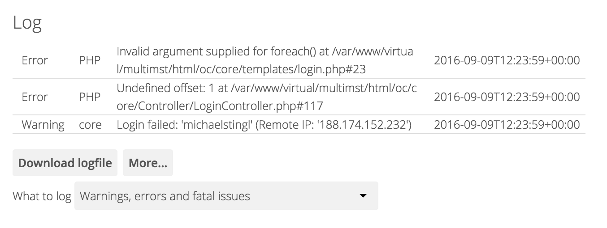
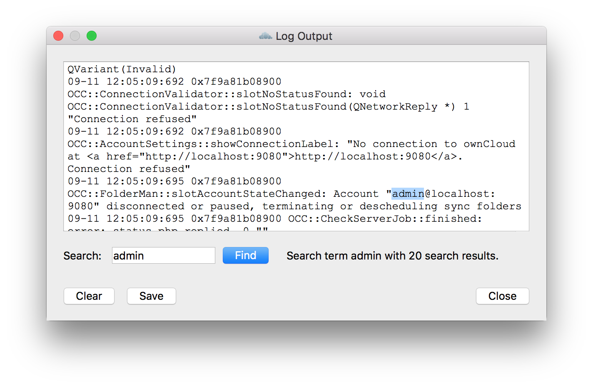
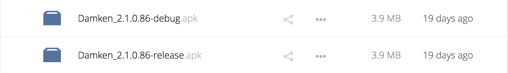
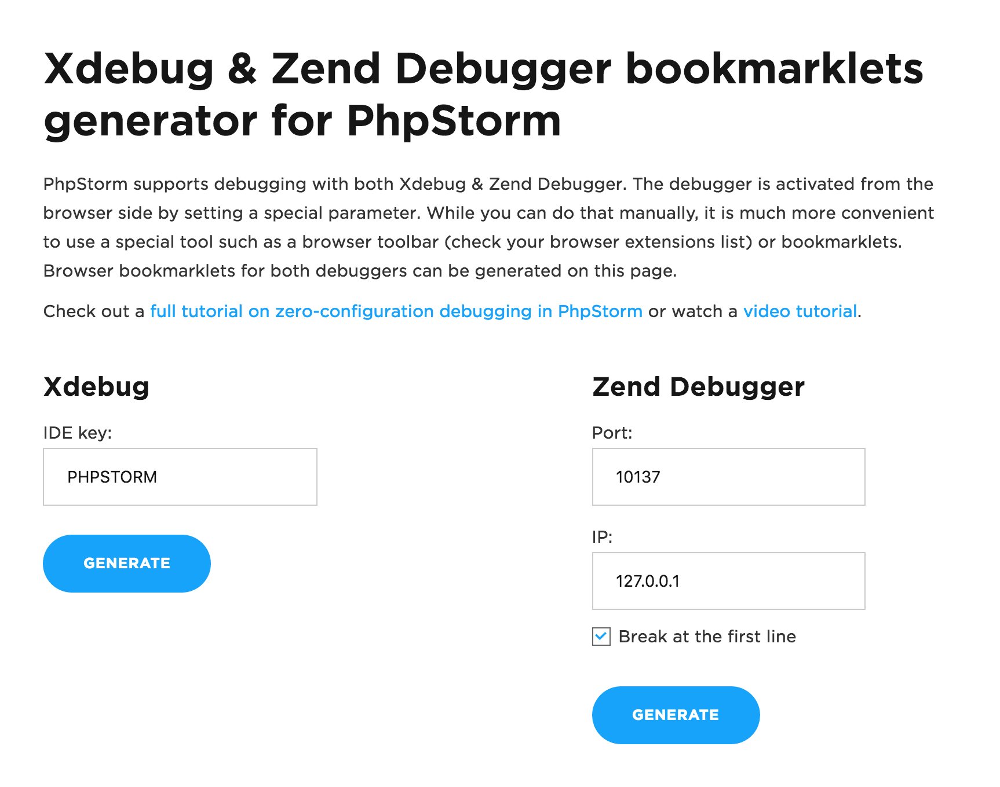

Getting ownCloud Insights
Logging (and debugging) all platforms
Michael Stingl
Customer Support and Branding Services
GitHub: @michaelstingl
Twitter: @michaelstingl
elsewhere: …
Which logs could help
- owncloud.log
- webserver access/error log
- analyzing logs
- desktop client logs
- logs from Android *-debug.apk
- Android Studio debugger
- iOS: crash logs
- iOS: Xcode device console
- capturing HTTP(S) requests with mitmproxy
- browser debugging
- smashbox
- Xdebug and PhpStorm
owncloud.log
- default: owncloud/data/owncloud.log
- download from Admin page
- configure log levels

Logging Configuration
"log_type" => "owncloud",
"logfile" => "owncloud.log",
"loglevel" => "3",
"logdateformat" => "F d, Y H:i:s",
syslog
"log_type" => "syslog",
"logfile" => "",
"loglevel" => "3",
Conditional Logging Level Increase
'log.condition' => [
'shared_secret' => '57b58edb6637fe3059b3595cf9c41b9',
'users' => ['sample-user'],
'apps' => ['files'],
],
Webserver Logs
ownCloud talks WebDAV
172.20.10.2 - admin [11/Sep/2016:09:28:24 +0000] "GET /remote.php/webdav/Hacker-Songs/mark_wheadon-just_one_more_hack.mp3 HTTP/1.1" 200 2796250 "-" "Mozilla/5.0 (Macintosh) mirall/2.2.3 (build 3601)"
172.20.10.2 - admin [11/Sep/2016:09:28:24 +0000] "GET /remote.php/webdav/Hacker-Songs/mc_plus_plus-alice_and_bob.mp3 HTTP/1.1" 200 3264837 "-" "Mozilla/5.0 (Macintosh) mirall/2.2.3 (build 3601)"
172.20.10.2 - admin [11/Sep/2016:09:28:24 +0000] "GET /remote.php/webdav/Hacker-Songs/model_view_controller_song.mp3 HTTP/1.1" 200 6941701 "-" "Mozilla/5.0 (Macintosh) mirall/2.2.3 (build 3601)"
Analyzing Logs
ELK Stack (Elasticsearch, Logstash, and Kibana)

Desktop Client Logs
Press "F12"

Desktop Client Log Options
The ownCloud client enables you to save log files directly to a predefined file or directory.
--logfile <file>
--logdir <dir>
--logexpire <hours>
owncloud --logdir /tmp/owncloud_logs --logexpire 48 `
Android *-debug.apk (ownBrander)
Every ownBrander build has a twin with debugging enabled.

Android Studio Debugger
- Application needs to be "debuggable"
- USB debugging enabled on the dice
- Windos: install a USB driver…
iOS: crash logs
- Xcode's Window menu > Devices, and select the iOS device on the side bar
- Synced with iTunes
- Xcode through the App Store (user can disable)
iOS: Xcode device console
Xcode's Window menu > Devices, and select the iOS device on the side bar

Capturing HTTP(S) requests with mitmproxy
Flow list: save with "w", load with "L"

Capturing HTTP(S) requests with mitmproxy
Flow view

Browser debugging
- Firefox Developer Tools
- Chrome, Safari: Web Inspector
- Mobile: Connect desktop Safari with mobile Safari
Smashbox
Framework for end-to-end testing the core storage functionality of owncloud-based service installation.
https://github.com/cernbox/smashbox.
Cons
- Not easy to install
- Many data
Xdebug - Debugger and Profiler Tool for PHP
PHP extension which provides debugging and profiling capabilities.
PhpStorm IDE
Setting the magic cookie to get Xdebug information to PhpStorm:
https://www.jetbrains.com/phpstorm/marklets/.

Thank You!
This presentation is available on GitHub:
https://github.com/michaelstingl/owncloudconf-logs.
php -S localhost:8080